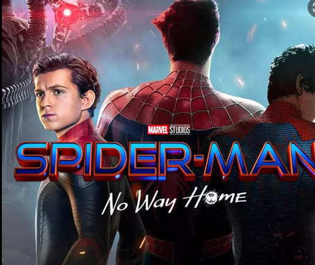

this is a movie list and review website

| movie | review |
|  | tobey maguire was good, but tom holland was the best. better acting skills. brought the teenager, nerd, and hero aspect perfectly. and his movies were better. my opinions. I LOVEEEE this movie. i’ve seen it about 6 times, and never get bored. and here is what i ... |
|
|
The Batman is a fantastic film. This movie really explores batman in a very different way. Robert Pattinson does a phenomenal job as the caped crusader, so much so that when you look at batman, you also see Bruce Wayne and his inner torment and darkness lurking within. The scenes with Bruce without the suit interacting and Alfred were very effective and powerful. All the characters are true to what they are supposed to be like. All the actors which include Robert Pattinson, Zoe Kravitz, Jeffrey |